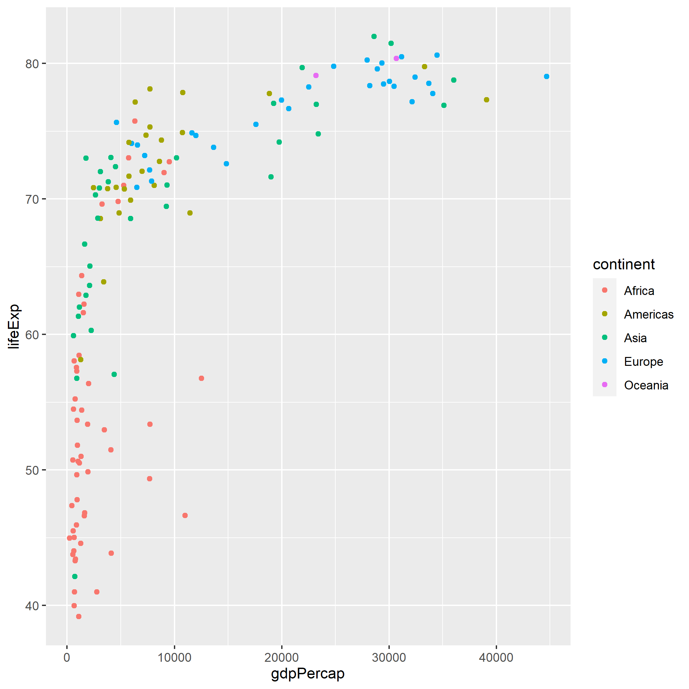

Intro
Welcome to QTM 151! We’re going to start off with a review of QTM 150. Even though most of you likely took it recently, QTM 151 relies heavily on the concepts from 150. So you need to have mastered them. Hopefully this brief review will help with that - and serve as a diagnostic to find anything you’re not comfortable with and may want to review.
We won’t review everything or all the details, but you should be comfortable with the basic concepts. In other words, you should be able to pretty quickly read all the code in this Tutorial, understand what it’s doing, and replicate it. If you don’t, or there’s a particular area or two you’re having difficulty with, please either:
Review the relevant QTM 150 Tutorials (mostly 2.1-3.3)
Check out the starred intro resources in the Other_R_Resources list I provide on Canvas
Send me an email with what’s confusing you, or come by office hours
Packages
Remember R is like a newborn baby. It knows how to do a few things natively, but you have to teach it to do a lot of other common tasks. You do this by loading packages each time you open R.
Do you recall what each one below does or provides? If not, take a minute to go back to the Tutorials or do a quick Google search to see if you can figure it out. (NOTE: If you took QTM 150 in Fall 2020 you were not introduced to skimr, so I’ll tell you here it provides several functions for quickly exploring and descriptively summarizing data sets.)
# Load (and, if necessary, first install) packages
pacman::p_load(tidyverse, ggridges, skimr, palmerpenguins, gapminder, nycflights13)If you’re following along in your own script, remember to run this code in your own script before proceeding.
Importing, Opening, and Exploring Data Frames
Data Import and Opening
Data frames that come from packages are very easy to open. You simply load the package and then call the data frame:
# Assuming `palmerpenguins` is already loaded as it was above
data(penguins)
penguinsOther data frames can be imported from your local computer or a shared cloud folder such as OneDrive or Dropbox (or downloaded or scraped directly from the web, but we didn’t cover that in detail and won’t go over it here). The most common data files you’ll probably import will be comma-separated value .csv files or Excel files ending in .xls or .xlsx. Here are some examples using the diabetes and obesity data you worked with in Tutorial 2.1 in QTM 150:
#Importing a CSV
diabobes <- read_csv("./obesity-diabetes.csv")
#Importing an Excel file
diabobes_trend <- read_excel("./obesity-diabetes-excel.xlsx", sheet = "diabobes_trends")Remember the . stands in for your working directory, which is where R will try and look for or write files to by default. You can check your working directory with getwd() and change it with setwd(). You can run setwd(dirname(rstudioapi::getActiveDocumentContext()$path)) to make your working directory the same as that of the script you’re working in.
Challenge: Try importing a data frame on your own - for example the slave ship data from QTM 150 HW 3 or an external data frame from your project (if you used one).
Exploring Data Frames
We learned several techniques for initially exploring data frames:
#Print the entire data frame
penguins#Print the first or last few observations
head(penguins, n = 8)tail(penguins, n = 4)#Look at the structure of the data frame
str(penguins)## tibble [344 x 8] (S3: tbl_df/tbl/data.frame)
## $ species : Factor w/ 3 levels "Adelie","Chinstrap",..: 1 1 1 1 1 1 1 1 1 1 ...
## $ island : Factor w/ 3 levels "Biscoe","Dream",..: 3 3 3 3 3 3 3 3 3 3 ...
## $ bill_length_mm : num [1:344] 39.1 39.5 40.3 NA 36.7 39.3 38.9 39.2 34.1 42 ...
## $ bill_depth_mm : num [1:344] 18.7 17.4 18 NA 19.3 20.6 17.8 19.6 18.1 20.2 ...
## $ flipper_length_mm: int [1:344] 181 186 195 NA 193 190 181 195 193 190 ...
## $ body_mass_g : int [1:344] 3750 3800 3250 NA 3450 3650 3625 4675 3475 4250 ...
## $ sex : Factor w/ 2 levels "female","male": 2 1 1 NA 1 2 1 2 NA NA ...
## $ year : int [1:344] 2007 2007 2007 2007 2007 2007 2007 2007 2007 2007 ...#Get a summary of each variable of the data frame
summary(penguins)## species island bill_length_mm bill_depth_mm
## Adelie :152 Biscoe :168 Min. :32.10 Min. :13.10
## Chinstrap: 68 Dream :124 1st Qu.:39.23 1st Qu.:15.60
## Gentoo :124 Torgersen: 52 Median :44.45 Median :17.30
## Mean :43.92 Mean :17.15
## 3rd Qu.:48.50 3rd Qu.:18.70
## Max. :59.60 Max. :21.50
## NA's :2 NA's :2
## flipper_length_mm body_mass_g sex year
## Min. :172.0 Min. :2700 female:165 Min. :2007
## 1st Qu.:190.0 1st Qu.:3550 male :168 1st Qu.:2007
## Median :197.0 Median :4050 NA's : 11 Median :2008
## Mean :200.9 Mean :4202 Mean :2008
## 3rd Qu.:213.0 3rd Qu.:4750 3rd Qu.:2009
## Max. :231.0 Max. :6300 Max. :2009
## NA's :2 NA's :2#skim() the data frame
skim(penguins)| Name | penguins |
| Number of rows | 344 |
| Number of columns | 8 |
| _______________________ | |
| Column type frequency: | |
| factor | 3 |
| numeric | 5 |
| ________________________ | |
| Group variables | None |
Variable type: factor
| skim_variable | n_missing | complete_rate | ordered | n_unique | top_counts |
|---|---|---|---|---|---|
| species | 0 | 1.00 | FALSE | 3 | Ade: 152, Gen: 124, Chi: 68 |
| island | 0 | 1.00 | FALSE | 3 | Bis: 168, Dre: 124, Tor: 52 |
| sex | 11 | 0.97 | FALSE | 2 | mal: 168, fem: 165 |
Variable type: numeric
| skim_variable | n_missing | complete_rate | mean | sd | p0 | p25 | p50 | p75 | p100 | hist |
|---|---|---|---|---|---|---|---|---|---|---|
| bill_length_mm | 2 | 0.99 | 43.92 | 5.46 | 32.1 | 39.23 | 44.45 | 48.5 | 59.6 | ▃▇▇▆▁ |
| bill_depth_mm | 2 | 0.99 | 17.15 | 1.97 | 13.1 | 15.60 | 17.30 | 18.7 | 21.5 | ▅▅▇▇▂ |
| flipper_length_mm | 2 | 0.99 | 200.92 | 14.06 | 172.0 | 190.00 | 197.00 | 213.0 | 231.0 | ▂▇▃▅▂ |
| body_mass_g | 2 | 0.99 | 4201.75 | 801.95 | 2700.0 | 3550.00 | 4050.00 | 4750.0 | 6300.0 | ▃▇▆▃▂ |
| year | 0 | 1.00 | 2008.03 | 0.82 | 2007.0 | 2007.00 | 2008.00 | 2009.0 | 2009.0 | ▇▁▇▁▇ |
Try some or all of these methods on the gapminder data to remind you what it contains:
#Print the entire data frame
#Print the first or last few observations
#Look at the structure of the data frame
#Get a summary of each variable of the data frame
#skim() the data frameData Visualization
The main package we used to visualize data was ggplot2, part of the tidyverse. The “gg” stands for “Grammar of Graphics,” a unified framework consisting of 7 elements, some combination of which can be used to create essentially any (static) graph. Those 7 elements are:
ggplot(data = <DATA>) + # 1. A dataset
<GEOM_FUNCTION>( #2. A "geometric object", or geom - basically a chart type! You can use one or more in a single plot
mapping = aes(<MAPPINGS>), # 3. Aesthetic mappings - specifying X and Y variables, colors, sizes, and fonts, and so on
stat = <STAT>, # 4. A statistical transformation, or "stat" - often unnecessary because the default is fine
position = <POSITION> # 5. Positional adjustments - for example, do you want bar charts stacked or side-by-side?
) +
<COORDINATE_FUNCTION> + # 6. Coordinate system - most often Cartesian (2-dimensional X-Y axes, but can also do polar, or maps for spatial data!)
<FACET_FUNCTION> # 7. Facetting - split one plot into many sub-plots, for example one frame/sub-plot for each species of penguinThe most important ones we need to review here are geoms and aesthetics (aesthetic mappings). These are relevant for all plots. The others are only relevant for certain ones, and I’ll leave you to mostly review those on your own from Tutorial 1.2 if you don’t recall how we used them.
ggplot() works by essentially “painting” a plot in layers. It starts with a blank canvas:
ggplot()That’s not very useful, but let’s add some data and a simple geom - a scatterplot of highway vs. city gas mileage from the mpg data frame. Let’s also do two aesthetic mappings. These “map” certain values from each observation in the data to certain “aesthetic” characteristics of the plot. For example, below we’ll map the values of hwy to the x-axis, and cty to the y-axis.
ggplot(data = mpg) +
geom_point(mapping =
# Each point is one observation in the data
# The x-coordinate of every point should map to (take its value from) that observation's value of hwy,
# and the y-coordinate should map to cty
aes(x = hwy, y = cty))Remember you can add extra information to a plot using grouping aesthetics like color and fill. You can also have multiple geoms on a single plot, layered one on top of the other:
ggplot(data = mpg,
# Use global aesthetics for X and Y for efficiency rather than copy-pasting into two geoms below
mapping = aes(x = hwy, y = cty)) +
geom_point(mapping = aes(color = class)) + #Use color here only so we don't get different smoothed lines for each class
geom_smooth() # Add one smoothed line of the relationship between hwy and cty for all cars togetherThere are many more ways to customize plots (titles, legends, rotating plots, etc.), but I’ll leave you to review QTM 150 Tutorials 1.2-3 for those should you wish to get a refresher on them. Really you can probably just refer back to those Tutorials (or this cheatsheet) as needed if you forget how to do something specific!
Data Transformation
We also learned several techniques for manipulation and transforming data. Let’s review using the flights data frame from the nycflights13 package.
Filtering
Filtering lets you select a subset of rows based on one or more criteria using Boolean logic (the operators & (for AND), | (for OR), ! (for NOT)) and comparison opeators (==, !=, >=, <=, >, <, %in%, etc.). For example:
# All Delta flights in January
flights %>%
filter(month == 1 & carrier == "DL")
# All flights in January from Delta OR going to Atlanta
flights %>%
filter(month == 1 & (carrier == "DL" | dest == "ATL"))
# All Delta flights in January or February NOT going to Atlanta or Albuquerque
flights %>%
filter(month == 1 & carrier == "DL" & !(dest %in% c("ATL", "ABQ")))Selecting
Selecting lets you choose a subset of columns or reorder some or all columns. For example:
#Select all 5 columns from year to sched_dep_time, plus arr_time for 6 total columns
flights %>%
head(100) %>%
select(year:sched_dep_time, arr_time)
#Select all columns EXCEPT arr_time
flights %>%
head(100) %>%
select(-arr_time)
#Simply Reorder columns to put arr_time at the front
flights %>%
head(100) %>%
select(arr_time, everything())Sorting (arrange())
To sort you use the arrange() function. This will by default sort one or more columns in “ascending” (low-to-high) order, but you can use the desc option to go high-to-low.
#Sort earliest to latest scheduled departure time, with ties broken by actual departure time (latest to earliest)
flights_arranged <- flights %>%
arrange(sched_dep_time, desc(dep_time))
head(flights_arranged, 20)Creating New Variables (mutate())
You use mutate() to create new columns, which are typically (but don’t have to be) based off one or more existing columns in the data. For example:
# Create a new variable called "gain" for time made up in the air
flights %>%
head(100) %>%
mutate(gain = dep_delay - arr_delay)
# Use case-when to create new variables based off the conditions of other variables
flights %>%
head(100) %>%
# Categorize departure delays as on-time if within 5 minutes of schedule, or early or late
mutate(dep_cat = case_when(dep_delay < -5 ~ "Early",
dep_delay <= 5 ~ "On Time",
TRUE ~ "Late"))Grouped Summaries
You’ll often want to calculate grouped summaries, and you do this using group_by() and summarize(). Grouped summaries basically give you a summary number (count, mean, sum, maximum, minimum) for the subgroups you specify in the data.
For example, say you wanted to get the number of flights departing and the mean departure delay for flights leaving each NYC airport (so maybe you can choose the one with the lowest delay to fly out of):
flights %>%
group_by(origin) %>%
summarize(mean_dep_delay = mean(dep_delay, na.rm = TRUE), #Calculate mean departure delay by airport
#Also give me the number of flights by airport
n_flights = n(),
#And the number of flights with non-missing departure delays (actually included in our summary) by airport
n_flights_in_summary = sum(!is.na(dep_delay)))For more on grouped summaries please review the appropriate sections of QTM Tutorial 3.2.
The Pipe
Note all of these above used the pipe to create clean and readable code. What is a pipe?

Not this, though if you have an opportunity to visit the Magritte museum in Brussels I recommend it.

This is why it’s called the pipe.
The pipe is basically an operator that takes a result of whatever code you wrote before it and pipes it as the first argument to the next function after it. This is especially useful for dplyr data transformation verbs and other functions in the tidyverse like ggplot. If this remains unclear to you and you need a refresher on how the pipe works please see QTM 150 Tutorial 3.2.
Practice Transformation-Visualization Pipelines
Those are the basics you need to remember! Now I just want to give you a little more practice with transformation and visualization to help refresh your memories. We’ll use the gapminder data. You should accomplish each of the following below using a single code block and pipes. Note the quiz is partially based on the answers to these questions.
Challenge 1: Produce a scatterplot with 2002 per capita GDP on the x-axis, life expectancy on the y-axis, and each point colored by continent.
HINT: Your plot should look like the below.

Challenge 2: Construct a line plot showing the evolution of population through time (1952-2007) for three countries of your choice. The line should also have a point for each year. The lines should be colored by country, but each point should be black and partially transparent.
HINT: Your plot should look like the below.

Challenge #3a: Calculate the total (not per capita!) GDP for each country for 2007, then print a table with just the country, continent, population, and total 2007 GDP, ordered from highest to lowest GDP.
HINTS: Think about how many observations you have for each country for 2007, and whether that necessitates a grouped summary or not. Also, you should end up with a table with 142 rows and the top value for GDP starting with “129…”.
Challenge 3b: Modify the above code to produce a table of the mean country population for each continent in 2007.
HINT: You should have a table with 5 rows, and the top value starts with “178…”
Challenge 3c: Finally, use the table from 3b to make a bar chart of the mean country population for each continent. Remember bar charts can be a little tricky - you may need to alter the default stat. Also make the bars horizontal so the labels are easier to read. You may color the bars by continent.
HINT: Your plot should look like the below, except maybe without the colors.

Summary
Congratulations on finishing your QTM 150 review! There are basically three ways you may be feeling right now (+ any variation in between):
This was easy!
- Great! You’re good to go.
Not completely lost, but still not confident with everything you just did…
- You may need to work a little more on reviewing QTM150. Consider going back through the QTM 150 Tutorials for the specific things that confused you, or check out the starred intro resources in the Other_R_Resources list I provide on Canvas
What the heck is going on?
- Don’t panic, but come talk to me during office hours. You’ll just need to put more work on reviewing material from QTM 150 - or, perhaps better, try getting the material from another perspective using the starred intro resources in the Other_R_Resources list I provide on campus. I would especially recommend the RStudio primers or Coursera courses from Johns Hopkins.